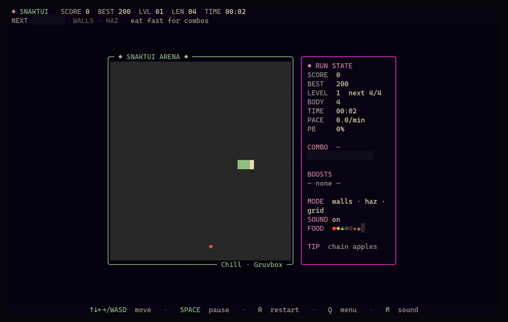

← Family hub
Game · Python + Textual
SnakTUI
Snake for the terminal with real Textual browser hosting on an external Python host: daily challenges, share codes, a live palette editor and a ghost trail from your best matching run.
pipx install git+https://github.com/Mark44928/SnakTUI.git
snaktui

- Real browser modeTextual app served from an external host
- Daily Challengesame seed, separate leaderboard
- Ghost + run codesrace your best run and share it
- Achievementsdynamic badges in the HALL OF FAME
- 100 testspure simulation + headless UI